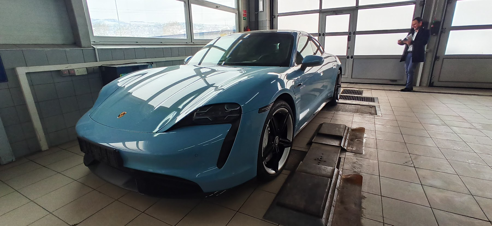
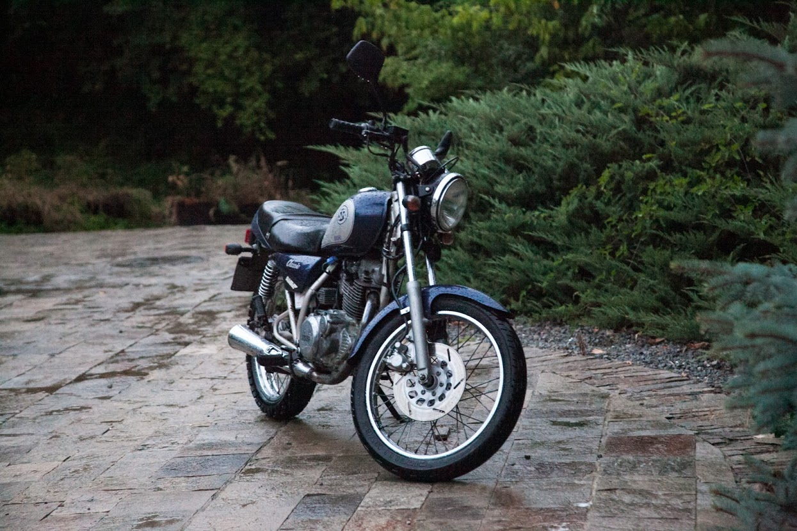
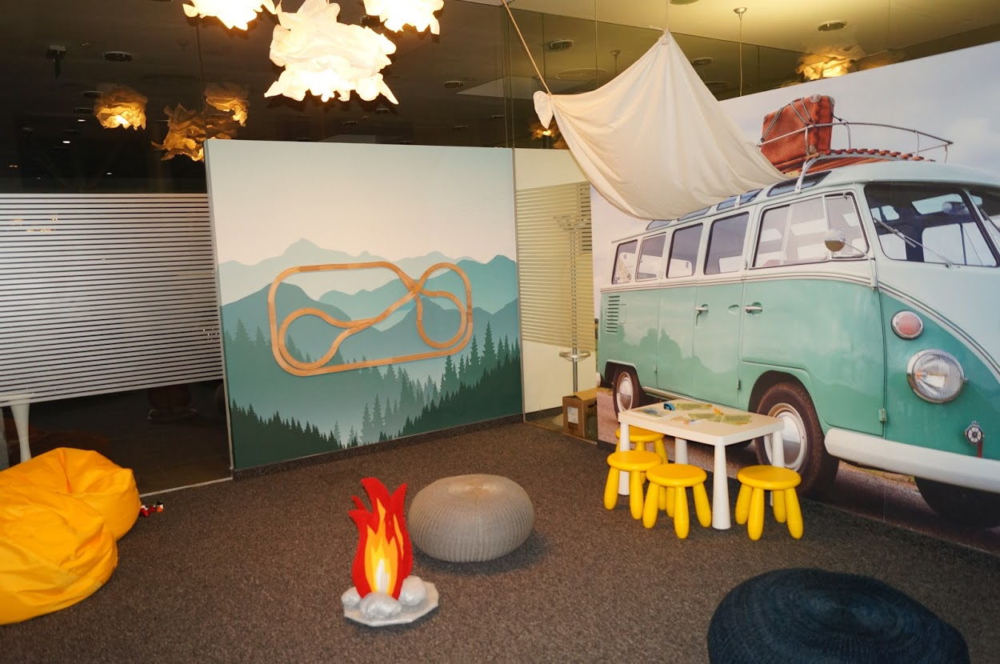

I graduated the Swift Quality Assurance academy in December 2019, in the top 5 of the class, as a conclusive step in my path of transitioning myself out of the Automotive industry and into the Software Development field.
I took the next step by taking a course in JAVA - fundamental in SoftUni, which I finished with excellent results. Now I continue with JavaScript path in SoftUni.
My current goal is to leverage a highly successful career, which has prepared me well to enter the Quality Assurance field. My diverse experience in the Automotive industry has required me to verify and confirm that all labor and process related tasks and actions have been executed according to the specifications and quality requirements of Volkswagen AG.
The Swift Academy course in Quality Assurance further developed my troubleshooting skills and gave me exposure to Software Testing methodologies, such as Exploratory Testing, Regressive Testing, Functional Testing, Non-Functional Testing, and other sub-types, primarily under an Agile structure, with a limited exposure to Waterfall.
In addition, I received exposure in basic SQL query exercising, Test Rail™, JIRA and basic Confluence, Bug Life Cycle, XML and web testing.
My team working skills are deeply rooted in my athletic background as a rower.
In my career so far, I’ve been recognized as an exemplary employee, as I’ve been promoted three times in eleven years.
Master’s Degree Automotive engineer Achievements:
● Automotive engineering; Automotive and train engines, Mathematics, Mechanics.
Professional qualification - Driving instructor:
Achievements:
● Teaching; Psychology, Didactics, Professional level of driving skills, Analyzing risks and making quick decisions in situations of stress
Work Experience
Senior Warranty Specialist & Quality control – April 2015 – present
Achievements:
● Developed a process of tracking orders, by introducing time metrics against the all service advisors.
● Conducts daily check of the quality of the repairs, check the repairs according to the specified requirements.
● I proposed and implemented a replacement of the paper form of the work card for all service complexes of Porsche Inter Auto, which reduced the time for filling and the probability of errors by 50%
Service Advisor – December 2011 – April 2015
Achievements:
● I managed five people in cross functional team; together we solved various customer problems.
Automotive Mechanic – January 2008 – December, 2011
Achievements:
● Using my analytical thinking, my technical skills diagnosed, and solved problems related to vehicle mechanics.
Automotive Mechanic – August 2006 – December 2007
Achievements:
● I helped the senior mechanics, I did simple repairs, and studied in parallel.
🕿 +359 895 70 48 22
 Radoslav_Atanasov@abv.bg
Radoslav_Atanasov@abv.bg